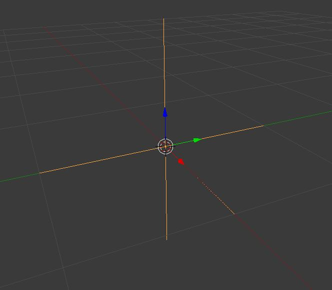
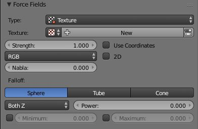

Texture¶

{kind=link}
Texture force field.
You can use a Texture force field to create an arbitrarily complicated force field, which force in the three directions is color coded. Red is coding for the X-axis, green for the Y-axis and blue for the Z-axis (like the color of the coordinate axes in the 3D视图). A value of 0.5 means no force, a value larger than 0.5 acceleration in negative axis direction (like -Z), a value smaller than 0.5 acceleration in positive axis direction (like +Z).

{kind=link}
UI for a Texture force field.
- Texture mode
This sets the way a force vector is derived from the texture.
- RGB
- Uses the color components directly as the force vector components in the color encoded directions. You need an RGB texture for this, e.g. an image or a colorband. So a Blend texture without a colorband would not suffice.
- Gradient
- Calculates the force vector as the 3D-gradient of the intensity (grayscale) of the texture. The gradient vector always points to the direction of increasing brightness.
- Curl
- Calculates the force vector from the curl of the 3D-RGB texture (rotation of RGB vectors). This also works only with a color texture. It can be used for example to create a nice looking turbulence force with a color clouds texture with Perlin noise.
- Nabla
- It is the offset used to calculate the partial derivatives needed for Gradient and Curl texture modes.
- Use Object Coordinates
- Uses the emitter object coordinates (and rotation & scale) as the texture space the particles use. Allows for moving force fields, that have their coordinates bound to the location coordinates of an object.
- Root Texture Coordinates
- This is useful for hair as it uses the texture force calculated for the particle root position for all parts of the hair strand.
- 2D
- The 2D button disregards the particles z-coordinate and only uses particles x&y as the texture coordinates.
Remember that only procedural texture are truly 3D.
例子¶
- A single colored texture (0.5, 0.0, 0.5) creates a force in the direction of the positive Y-axis, e.g. hair is orientated to the Y-axis.
- A blend texture with colorband can be used to created a force “plane”. E.g. on the left side (0.5, 0.5, 0.5), on the right side (1.0, 0.5, 0.5) you have a force plane perpendicular to XY (i.e. parallel to Z). If you use an object for the coordinates, you can use the object to push particles around.
- An animated wood texture can be used to create a wave like motion.